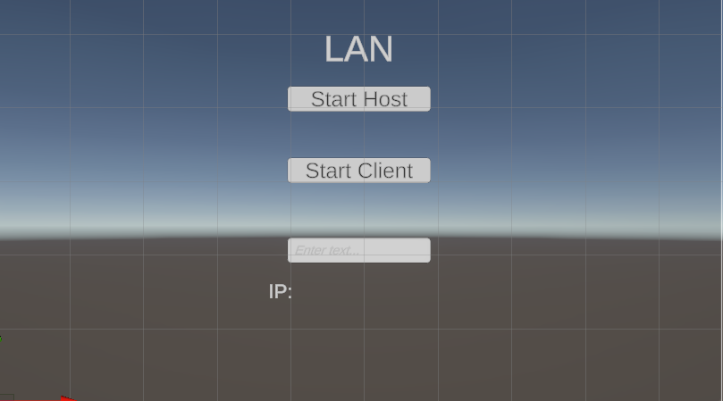
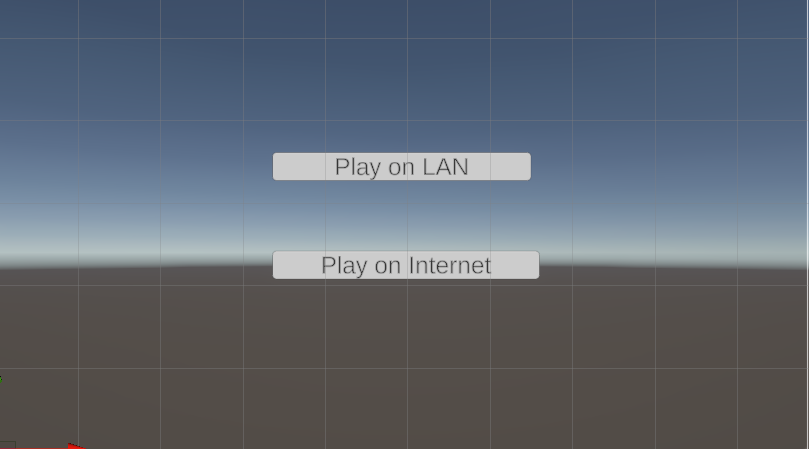
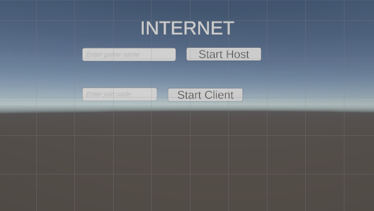
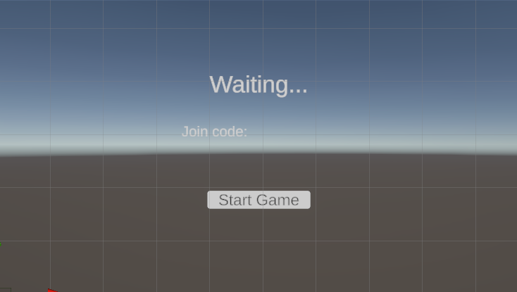
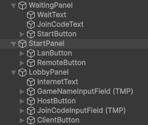

4.2 Connexió remota amb codi
Partim de la configuració del nostre projecte de la secció anterior per a connectar-nos a un servidor Relay i crear o unir-nos a una sessió de joc.
Preparació de la UI
Primer crearem 2 panells adicionals per a poder triar entre jugar en xarxa local (LAN) o en línia (Internet).
El ConnectionPanel existent ja conté la lògica per a funcionar per LAN, així que només caldrà afegir un text que indique que és per a jugar en LAN. Opcionalment pots afegir un botò per a tornar enrere al menú principal.

A banda crearem 2 panells nous: el StartPanel que mostrarà 2 botons per a jugar en LAN o en línia, i el LobbyPanel que opcions per a crear o unir-se a una sessió de joc en línia.
El StartPanel és molt simple, només conté 2 botons que mostren o amaguen els panells corresponents:

El LobbyPanel conté els següents elements:
- Un Text per a mostrar que estem en el panell d'Internet.
- Un InputField per a introduir el nom de la sessió a crear.
- Un botó per a crear una sessió amb el nom introduït.
- Un InputField per a introduir el join code d'una sessió a la que unir-se.
- Un botó per a unir-se a la sessió corresponent al join code introduït.

Per a mostrar el Join Code de la sessió creada, afegirem un Text al WaitingPanel i el referenciàrem en el script per a actualitzar-lo quan es cree una sessió.

La jerarquia de la UI quedaria així:

En l'script UIManager.cs, afegirem les referències als nous panells i els mètodes per a mostrar-los o amagar-los:
1 2 3 4 5 6 7 8 | |
També hem creat un string per a guardar el join code de la sessió creada.
No oblideu afegir les referències en l'inspector de Unity als nous panells i elements de la UI.
En el mètode Start() del mateix script, mostrarem el StartPanel i amaguem els altres:
1 2 3 4 | |
I creem els mètodes per a mostrar o amagar els nous panells:
1 2 3 4 5 6 7 8 9 10 11 12 13 14 15 16 17 18 19 | |
Recordeu d'afegir les següents línies als mètodes per a mostrar panells existents:
1 2 | |
Creem els callbacks dels botons del StartPanel per a mostrar els panells corresponents:
1 2 3 4 5 6 7 8 9 | |
I els afegim als botons corresponents.
Connexió al servidor Relay
La resta de la lògica per a connectar-se al servidor Relay i crear o unir-se a una sessió de joc la implementarem en el panell de lobby. Aquesta lògica la farem utilitzants les sessions del Multiplayer Services SDK de Unity.
Les sessions proporcionen una capa d’abstracció per a gestionar els estats dels jocs multijugador, incloent-hi les connexions inicials dels jugadors i les interaccions durant la partida, i gestionen automàticament operacions complexes com l’elecció de l’amfitrió, l’entrada i eixida de jugadors i l’establiment de connexions de xarxa.
Una sessió representa un grup de jugadors connectats i gestiona les seues interaccions mitjançant diversos tipus de connexió.
Les sessions funcionen tant amb les llibreries de xarxa Netcode for GameObjects com amb Netcode for Entities.
Abans de fer la connexió crearem una propietat per a guardar la sessió actual:
1 | |
Per a fer la connexió com a Host crearem el mètode StartSessionAsHost():
1 2 3 4 5 6 7 8 9 10 11 12 | |
En aquest codi:
- La variable
MaxPlayersestableix el nombre màxim de jugadors permesos en la sessió, incloent l’amfitrió. En aquest exemple, el màxim és de 4 jugadors. - La variable
Nameestableix el nom de la sessió, que es pot introduir en l’InputField del LobbyPanel. Si no s’introdueix cap nom, es donarà un nom per defecte de “My Relay Game”. - La variable
optionsde la classeSessionOptionspermet definir altres opcions de la sessió, com el nom de la sessió o si està protegida amb contrasenya. - L’ús de
WithRelayNetwork()(oWithDistributedAuthorityNetwork()) configura la sessió perquè utilitze la xarxa Relay (o Distributed Authority) en lloc de connexions directes (és a dir, amb una adreça IP i port fixos). - La línia
var session = await MultiplayerService.Instance.CreateSessionAsync(options);crea la sessió i fa que el jugador siga l’amfitrió. - L’última línia,
Debug.Log($"Session {session.Id} created! Join code: {session.Code} Name: {session.Name}");, mostra l’ID de la sessió, el nom i el codi d’unió en la consola de l’Editor de Unity.
Per a cridar a aquesta funció, creem un callback per al botó "Start Host del LobbyPanel:
1 2 3 4 5 6 7 8 9 10 11 12 13 14 | |
Amb aquest callback, cridem a la funció StartSessionAsHost() i actualitzem el text del Join Code amb el codi de la sessió creada. També mostrem el panell d'espera (WaitingPanel) on els jugadors esperaran a que es connecten.
En l'inspector de Unity, assignem aquest callback al botó "Start Host" del LobbyPanel.
Per a unir-se a una sessió existent amb el codi d'unió, hem de fer amb la següent instrucció:
1 | |
La qual utilitzarem dins del callback del botó "Start Client " del LobbyPanel:
1 2 3 4 5 6 7 8 9 10 11 12 13 14 15 16 17 18 19 | |
Amb aquest callback, obtenim el codi d'unió introduït en l'InputField del LobbyPanel i intentem unir-nos a la sessió corresponent. Si la connexió és exitosa, mostrem el panell d'espera (WaitingPanel) on els jugadors esperaran a que es connecten. També ocultem el text del Join Code per als clients, ja que només és necessari mostrar-lo a l'amfitrió.
Ja tenim la funcionalitat bàsica per a crear o unir-se a una sessió de joc en línia utilitzant el servidor Relay de Unity. Comprova que tot funciona compilant i execunatnt el joc en diferents dispositius.
Més opcions i funcionalitats
Opcions de sessió
Al crear una sessió, es poden configurar altres opcions com el nom de la sessió, el nombre màxim de jugadors, si està protegida amb contrasenya, si és privada, etc.
Pots consultar totes les opcions disponibles en la documentació oficial del Multiplayer Services SDK.
Les més importants són:
- IsLocked: Si la sessió està bloquejada, no permetrà que nous jugadors s'uneixin fins que es desbloquege.
- IsPrivate: Si la sessió és privada, no apareixerà en les cerques de sessions disponibles.
- MaxPlayers: El nombre màxim de jugadors permesos en la sessió, incloent l’amfitrió.
- Name: El nom de la sessió.
- Password: Si la sessió està protegida amb contrasenya, aquesta serà necessària per a unir-se a la sessió.
Llistar sessions disponibles
En lloc d'unir-nos a una sessió amb el codi d'unió, també podem mostrar una llista de les sessions disponibles i unir-nos a la que triem. Per a això, podem utilitzar el mètode ListSessionsAsync() del MultiplayerService per a obtenir la llista de sessions disponibles i mostrar-les en la UI:
1 2 3 4 5 6 | |
Després, podem implementar la lògica per a unir-se a una sessió seleccionada de la llista:
1 | |
Consultar jugadors connectats
Amb una sessió creada o unida, també podem consultar la llista de jugadors connectats a la sessió:
1 2 3 4 5 6 7 8 9 10 11 12 13 14 15 16 | |
La variable player és del tipus IReadOnlyPlayer i conté informació sobre el jugador, com el seu ID. Per a establir altres propietats personalitzades, com el nom del jugador, es poden utilitzar les PlayerProperties de la classe Player:
1 2 3 4 | |